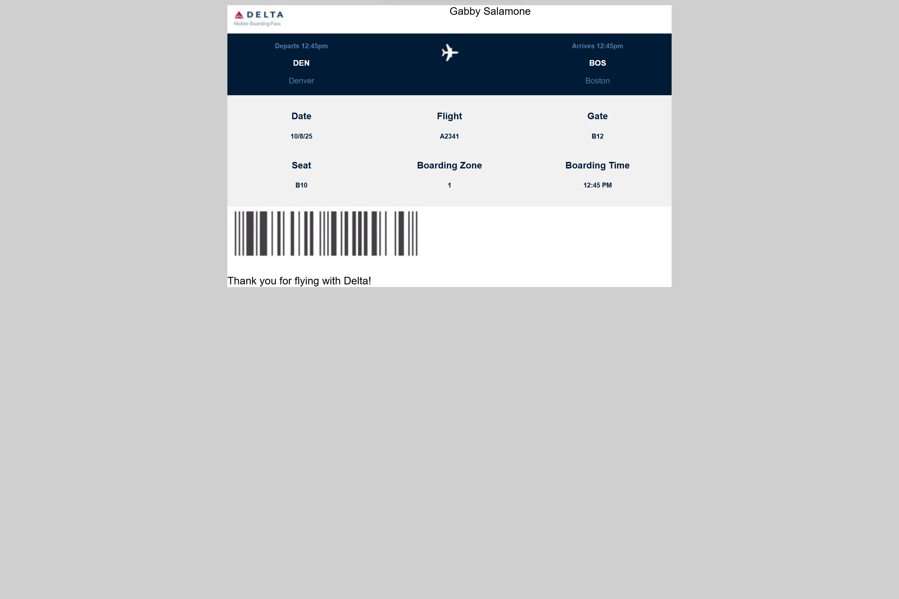
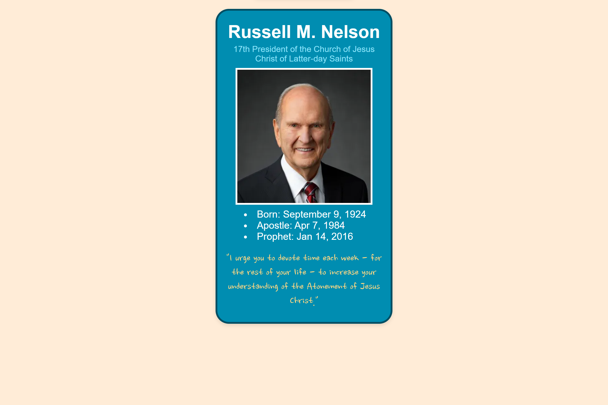
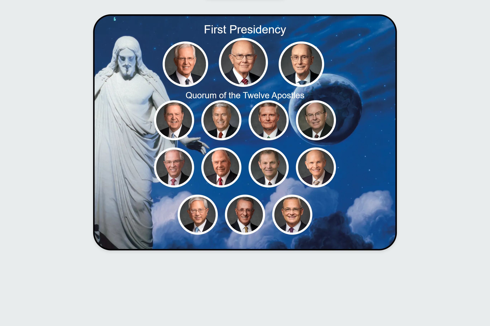
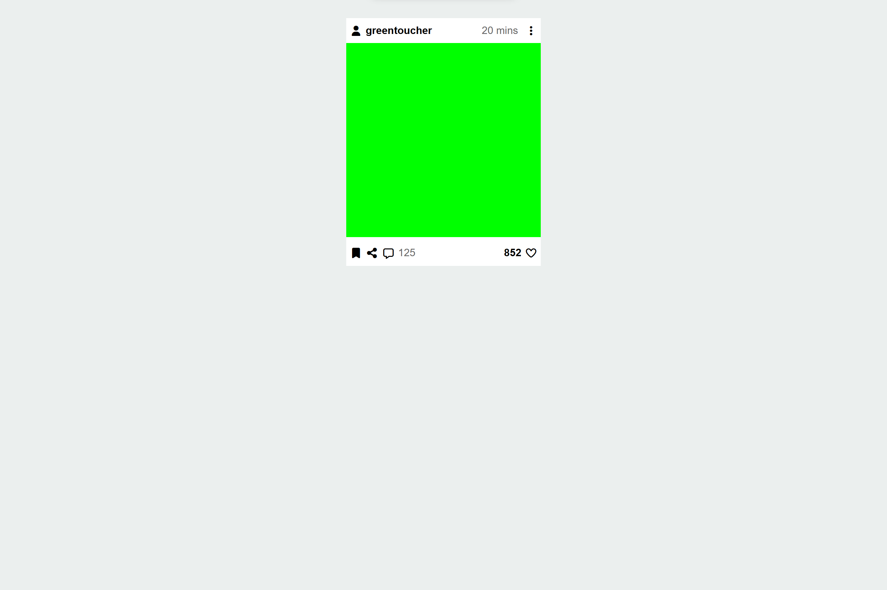
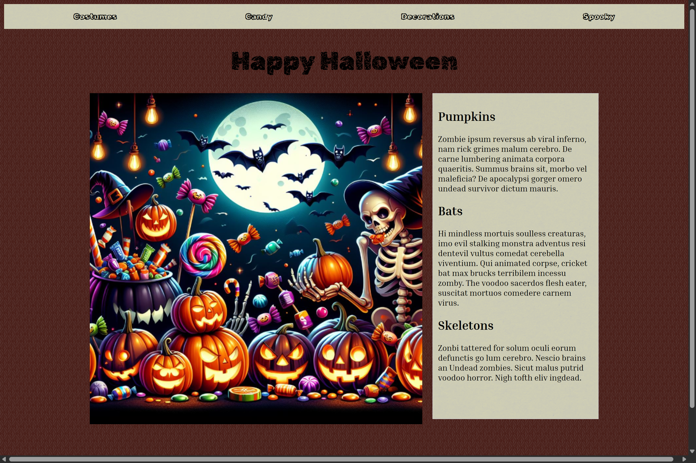
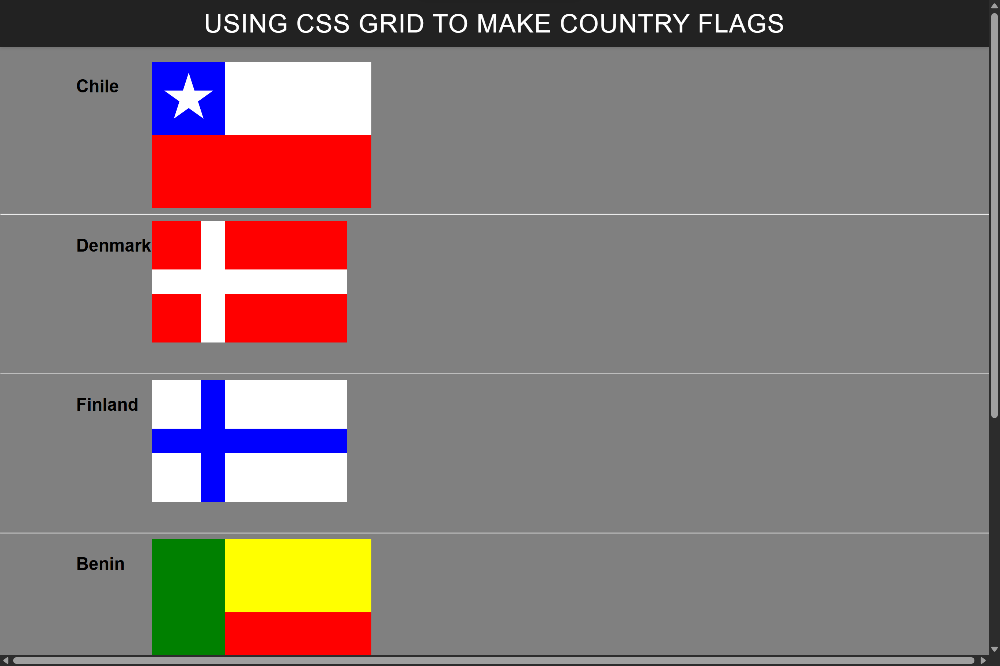
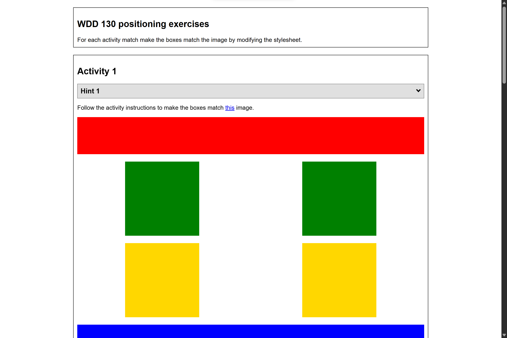

Boarding pass
This was our first ICE project. It taught me how to use grids.

Prophet card
We made these cards for an exercise after the prophet died. We used flex to make them.

Apostle spotlight
This exercise was the first time I used grid in a project. It was a hard exercise inichaly, but I figured it out.

Social website
This exercise was a lot like the boarding pass one. I had gotten better at using flex by then so this did not take me as long to make.

Halloween website
For this exercise we were instructed not to change the html code and only the css. I tried to make my page look haunted mansion themed.

Grid flags
This was a fun exercise where we had use grid to make a variety of countries flags.

Positioning exercise
This was a harder exercise simular to the flags one where we had to replicate serveral examples. I leared how to use z-index here.